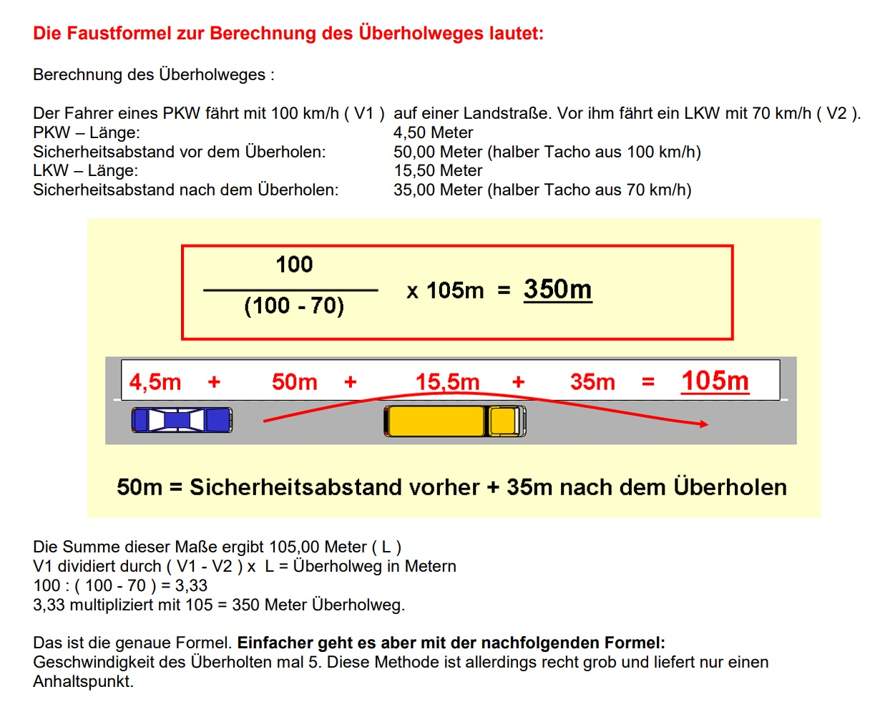

Formeln
Bremsweg in Metern
(Geschwindigkeit in km/h : 10) x (Geschwindigkeit in km/h : 10)
Gefahrenbremsung (Halbbremsweg)
(Geschwindigkeit in km/h : 10) x (Geschwindigkeit in km/h : 10) / 2
Reaktionsweg in Metern
Der Reaktionsweg ist der Weg, der vom Erkennen einer Gefahr bis zur Betätigung der Bremse zurückgelegt wird
(Geschwindigkeit in km/h : 10) x 3
Anhalteweg (Reaktionsweg und Bremsweg zusammenzählen)
(Geschwindigkeit in km/h : 10) x 3 + (Geschwindigkeit in km/h : 10) x (Geschwindigkeit in km/h : 10)
Fliehkraft
Fliehkraft = (Masse x Geschwindigkeit2) / Kurvenradius
если скорость в курве увеличивается в 2 раза, то Fliehkraft увеличивается в 4 раза. Давление в шинах никак не влияет
Abstand
- 15 Meter (Drei Pkw-Längen) im Stadtverkehr
- Halber Tacho (2 Sekunden Abstand) außerhalb geschlossener Ortschaften (Beispiel: Bei 70 km/h muss man 35 Meter Abstand halten)
- Doppelter Abstand: Bei schlechter Sicht oder schlechten Straßenverhältnissen
- 10 метров до знаков, если их будет закрывать моя машина - "Андреас крест", "Halt. Vorfahrt gewähren", "Vorfahrt gewähren" (трусики) и светофор
- 15 метров - при парковке перед и за знаком автобусной остановки (остановку на 3 мин делать можно и ближе)
- 50 метров - мин расстояние до Андреас креста при парковке ВНЕ города
- 5 метров - парковка у (перед) Андреас креста В городе
- Pkw с прицепом если вместе длиннее 7 метров, надо вне городов на дороге с одной полосой для кажд направления держать такую дистанцию от машины впереди, чтобы при обгоне машина могла встроиться передо мной (например 80 км/ч - 80 метров расстояние)
- 18 метров - макс длина комбинации из машины и прицепа
- 5 метров - расстояние перед пешеходным переходом при парковке или остановке
- 8 метров от перекрестка или примыкания нельзя парковаться на правой обочине, если справа Radweg
- 5 метров до и после перекрестка - парковаться, если справа нет Radweg
- Warndreieck - 50 метров в городе, 100 метров на ландштрассе, 150 метров автобан (по дефолту в тесте - 100 метров). если в пределах этого расстояния курва, ставить перед курвой
- 150-250 метров вне города - знак восклицательный в красном треугольнике - ставится за 150-250 метров до места, о котором он предупреждает
- Bahnübergang через 240 метров (3 полоски) - обгонять уже нельзя
- хорошая дорога, хороший обзор - я должна мочь остановиться в пределах зоны видимости
- на узких улицах надо смочь затормозить на половине обозримого пути
- колонна 50 км/ч - расстояние до впереди идущей машины - 15 метров
- 3 метра - расстояние между моей машиной и разделительной полосой (при парковке на обочине)
Seitenabstand
- 0,5 Meter - Straßenbahnen
- 1 Meter - zweispurigen Fahrzeugen (auch PKW, LKW)
- 1,5 Meter (вне городов 2 метра) - Fußgängern und Zweirädern
- боковое расстояние от ждущего автобуса - 2 метра
Ladung
- 1,5 метра - обозначенный груз может выступать назад над машиной, если ехать дальше 100 км. Меньше 100 км - 3 метра.
- Больше 1 метра назад - надо обозначать (минимум флажок 30 на 30 см).
- 1,5 метра над высотой дороги должно висеть такое обозначение. Rückstrahler - höchstens90 cm über der Fahrbahn
- 2,5 метра высота машины - груз может до 50 см выступать вперед над моей машиной
- Если машина ниже 2,5 метра - груз не должен выступать вперед вообще
- груз может выступать вперед над прицепом, но не над моей машиной
- груз, который выступает в сторону более, чем на 40 см за габаритные огни, надо помечать сзади красным светом и спереди белым (в темноте или при плохой видимости)
- Gesamtbreite eines Fahrzeugs mit Ladung maximal 2,55 Meter
- pkw - можно только 1 прицеп!!! Lkw можно 2
- Stützlast для прицепа - мин 4% от общей массы
- нагрузка на крышу - смотреть инструкцию от производителя и общую нагрузку на машину. В техпаспорте (Teil 1) этой инфы может не быть
- макс прицепная нагрузка для моей машины - Teil 1 (техпаспорт)
- давление в шинах повышать при сильной загрузке машины
Speed Limits
- 50 км/ч - снежные цепи лимит
- 50 км/ч по автобану - если видимость меньше 50 метров
- 50 км/ч - дефолтный лимит по городу (если нет других знаков)
- 61 км/ч - мин требуемая скорость на автобанах и крафтфарштрассе (в техпаспорте - не менее 60 км/ч)
- 40 км/ч при въезжании в Kreisverkehr - немного быстровато
- 130 - рекомендованная скорость на автобанах и Kraftfahrstraßen
- Landstraßen außerorts - Höhstgeschwindigkeit 100km/h (PKW bis 3,5 t)
- 80 км/ч - вне городов, езда с прицепом
- с временной шиной скорость - макс 80 км/ч, можно ехать до ближайшей мастерской. Дольше нужного с такой шиной не ездить
- Ausfädelungsstreifen - замедляться на нем примерно до 50 км/час, если нет других знаков
- в городе можно ехать по правой полосе быстрее, чем слева (вне города нельзя)
- пересекать велодорожку с шаговой скоростью не обязательно
- если автобус стоит на остановке, но НЕ включена аварийка, до скорости шага снижаться не обязательно
- если аварийка у автобуса на остановке включена, то снижаемся до скорости шага
- при съезде с автобана надо чекать спидометр, тк можно привыкнуть к высокой скорости и слишком быстро въехать в съезд
- на Einfädelungsstreifen можно ехать быстрее, чем на полосе с постоянным потоком
Überholen
- Bahnübergang через 240 метров (3 полоски) - обгонять уже нельзя
- на односторонних улицах обгонять можно
- автобус со включенной аварийкой не обгоняем
- если при обгоне тот, кого мы обгоняем, ускорился, а мы едем и так с максимально допустимой скоростью - придется не продолжать обгон и встроиться обратно за машину справа
- если меня обгоняют - не повышать скорость, ехать максимально правее
- если машина пристроилась сзади во время моего обгона, я продолжаю обгон
- обозримый участок должен быть в 2 раза длиннее, чем путь обгона
- 100км/ч - примерно 400м путь для обгона (до холма тогда должно быть минимум 800м)
- если есть сплошная, но прям рядом с ней вдоль нее на моей полосе нанесена еще и пунктирная разметка - мне можно делать обгон через такую сплошную. Гегенферкеру нельзя (то есть можно тому, с чьей стороны нанесен пунктир)
- через сплошную можно завершить обгон, если ты начал его не там
- обгон Lkw с прицепом - лучше не начинать в непосредственной близости от грузовика, тк хуже обзор
- Lichthupe (мигание дальним) как сигнал обгона вне населенных пунктов - и днём, и ночью
- при обгоне с сильным боковым ветром машину может снести в сторону, противоположную от направления ветра, когда она въезжает в ветровую тень от грузовика
Überholwegformel
Verkehrszeichen und Tafeln
- LPG - liquified petroleum gas (Autogas)
- CNG - Erdgas
- H2 - Wasserstofftankstelle
- Bedarfumleitung auf der Autobahn - U в синем прямоугольнике и номер
- номер автобана - в синем ромбе!!!
- номер съезда с автобана - цифра в синем кружке
- знак P (парковка) с машиной, которая одной стороной стоит на тротуаре - мотоциклам там тоже можно парковаться
- доп табличка с велосипедами со стрелками с двух сторон - электророллеры тоже
- табличка Werktags под запретом на парковку и остановку - значит, можно парковаться по воскресеньям и праздничным дням. Суббота - рабочий день
- жёлтый прямоугольный знак с цифрами и черной рамочкой - Bundesstrasse
- конная дорога - другим туда нельзя
- знак "скользкая дорога" - не только мокрая может быть, но и грязная
- зоны со спокойным трафиком - надо ехать с шаговой скоростью. Детям можно играть на проезжей части, также на ней могут быть пешеходы
- знак "пешеходная зона" - машинам туда нельзя
- Андреас крест с изогнутой стрелкой - могут быть провода под напряжением
- С трусами уступать дорогу только тем, кто едет по дороге, перпендикулярной моей (у них типа главная, а напротив тоже может стоять знак трусов гегенферкеру)
- Kreisverkehr без знаков приоритета - rechts vor links (часто в жилых районах). При выезде из Kreisverkehr давать дорогу пешеходам и велосипедистам
- Dauerlichtzeichen (стрелки, крестики и тд на электроннлм табло над полосой) - действительны для всех. На этих полосах нельзя делать остановку
- Dauerlichtzeichen крестик - по этой полосе нельзя ехать
- знак сужения дороги справа - гегенферкеру предоставить приоритет
- грузовик в красном кружке с ограничением по длине 10 метров - Pkw с жилым прицепом длиннее 10 м или трактору с прицепом длиннее 10 метров тоже туда нельзя
- электророллерам можно ездить по велосипедным дорогам
- машинка в красном кружке - нельзя Pkw и Lkw. Мотоциклам можно
- хальтфербот с табличкой с зачеркнутой машиной на обочине - нельзя парковаться на обочине тоже
- Anlieger frei - гостям жильцов тоже можно
- 2 стрелки (у меня приоритет) - мне можно использовать свой приоритет, если узкий участок свободен
- акульи зубы - Wartepflicht. rechts vor links
Vorfahrt
- пешеходов пропускать всегда!
- если пробка, то стоять на пешеходном переходе Нельзя!!!
- встречный транспорт пропускать только при повороте налево (типа я когда поверну налево, они у меня будут как бы помеха справа, т.е. типа надо пропустить)
- Такси не надо пропускать при отъезде от остановок
- у трамвая приоритет, если он едет с тобой в попутном направлении, и у него тоже зелёный
- если трамвай поворачивает направо (едет слева от тебя и поворачивает как бы наперерез), то у трамвая приоритет
- акульи зубы - Wartepflicht. rechts vor links
- на автобане приоритет у машин на полосах с постоянным потоком (они не обязаны активно впускать меня с Einfädelungsstreifen)
Reißverschlussverfahren
- если стоит знак слияния 2х полос в одну (самая левая сливается в правую) - например, через 200 м из-за бауштелле
- если я еду в самой левой, а справа много машин, то заранее НЕ встраиваться вправо!
- хать до упора в левой до конца, потом останавливаться и включать правый поворотник
- машины из правого ряда меня должны пропустить, чтобы я могла встроиться по веерному/зип-принципу - машина через одну. Одна едет из правого дальше, одна встраивается из левого
Parken und Halten
- машины допустимой массы до 2,8 тонн могут парковаться на спец обозначенных тротуарах
- на полосах со стрелками направления движения нельзя делать остановку (типа на 3 минуты)
- на стоянках такси нельзя делать остановку
- парковаться по левую сторону по направлению движения можно на улицах с односторонним движением и там, где на правой стороне дороги рельсы
- Vorfahrtstrassen вне населенных пунктов - можно парковаться на обочине, можно делать остановку на правой обочине
- befestigte Seitenstreifen außerorts - halten, parken, mit langsameren Fahrzeugen fahren (Fahrräder, Mofas, landwirtschaftlich)
- паркшайба - если сломан парк автомат или предписано использовать шайбу
- прицеп без машины парковать - на спец парковках дольше 2х недель. Просто на улице - не больше 2х недель
- в населенных пунктах на неосвещенных улицах достаточно обозначить припаркованную машину парковочными огнями. Вне населенных пунктов недостаточно, надо включить все габаритные огни
- 3 метра - расстояние между моей машиной и разделительной полосой (при парковке на обочине)
- на Vorfahrtstrasse парковаться без обочины нельзя, даже если 3 метра остаётся между машиной и разделительной полосой (так можно парковаться только НЕ на Vorfahrtstrasse или в городе)
- при парковке вне городов включать Standlicht (4 габаритных огня)
- над люками иногда нельзя парковаться, но делать остановку обычно можно
- парковаться на правой полосе движения типа можно, но если есть альтернатива для парковки, то нельзя (альтернатива для парковки - обочина справа или парковочная полоса справа)
- перед Bordsteinabsenkungen нельзя парковаться
- Dauerlichtzeichen - на этих полосах нельзя делать остановку
- хальтфербот с табличкой с зачеркнутой машиной на обочине - нельзя парковаться на обочине тоже
- прицеп с допустимой массой больше 2 тонн регулярно парковать по воскресеньям и праздничным дням с 22 до 6 - парковать в вонгебитах на специально обозначенных местах и в гевербегебитах
Beleuchtung
- Abblendlicht днём, если обзор затруднён (туман, снегопад, дождь)
- Abblendlicht в туннеле
- Nebelschlussleuchte (задние противотуманки) - включать, если из-за тумана видимость меньше 50 метров. Из-за дождя не надо
- Nebelscheinwerfer (передние противотуманки) - дождь, туман, снег (если обзор затруднён)
- Fernlicht можно не выключать, если светит пешеходам в спину
- Bremslicht не работает - лампочка или Sicherung
- при парковке вне городов включать Standlicht (4 габаритных огня)
- перед Bahnübergang жду в темноте - можно включить Standlicht, чтобы меня было видно, но никого не слепить
- Nebelschlussleute включены - жёлтая лампочка
Verkehrspolizist
- типа зелёный - стоит боком ко мне, при этом руки в стороны - мне можно ехать
- если мне надо повернуть налево, я еду перед ним, не за ним
- рука вверх - типа жёлтый, ждать следующего сигнала, очистить перекресток (если кто-то уже там стоит)
- руки в стороны (стоит ко мне) - типа красный, ехать нельзя. Кверферкеру можно, он к ним боком
Anhänger
- 18 метров - макс длина комбинации из машины и прицепа
- с Auflaufbremse - при долгом спуске с горы может перегреваться тормоз. В гору ничего не делает
- Auflaufbremse - перевод отцеплением прицепа ставить его на ручник
- Stützrad не надо, чтобы катился во время поездки, он для поддержки при парковке, чтобы прицеп не заваливался
- доп зеркала ставить, если прицеп мешает обзору (независимо от размера и типа прицепа)
- максимальная прицепная нагрузка - в техпаспорте моей машины
Квадроциклы
- нужно носить мотоциклетную одежду
- рулить труднее, тк нет усилителя руля
- надо возить с собой треугольник
- на узкой курве могут опрокинуться
Manuelle Schaltung
- если едем в горку, включаем более низкую передачу, тк мало инерции
- с горки вниз - тоже более низкую, чтобы можно было тормозить, а не катиться
- если с горы вниз выжимать сцепление, изнашиваются тормоза, потому что приходится тормозить и невозможно использовать торможение двигателем (торможение двигателем - езда на более низкой передаче, чем нужно. Колеса хуже крутятся, двигатель снижает инерцию машины)
- на высоких передачах машина едет больше по инерции, типа разогналась (благоприятнее для окр среды)
- на низких - меньше по инерции, сильнее работает двигатель, больше число оборотов двигателя
- чтобы машина не скатилась с горы, включить первую или заднюю передачу. Поднять ручник
- движение с горы с прицепом - нажатие на педаль сцепления НЕ снимает нагрузку с тормозоа, а наоборот увеличивает (при нажатии педали сцепления сцепление пропадает, т.е. колеса начинают вращаться ещё легче)
Technical Issues
- информация, когда следующий техосмотр (раз в 24 месяца) - на наклейке на задних номерах и по записи в тех паспорте
- при буксировании включать аварийку
- перед буксированием любой машины надо прочитать инструкцию от производителя, как правильно это делать. Моя категория позволяет буксировать
- при буксировании будет хуже крутится руль (при повреждениях мотора не работает усилитель руля). По возможности использовать абшлеппштангу. При буксировании может повредиться катализатор
- кручение руля на месте - могут появиться повреждения на поверхности шин и на передней оси
- neue Hauptuntersuche - in 24 Monate
- 1,6 мм - минимальная допустимая глубина профиля шин
- не работает тормозной свет - постараюсь устранить проблему сам или ремонт в мастерской
- если тормоз сильнее работает в одну сторону - машина может вырываться в сторону. Тормозной путь удлиняется
- поломка поворотника - он мигает чаще, чем обычно. Может мигать, если лампочку надо заменить, но НЕ Sicherung (если Sicherung, она вообще не горит)
- если руль "трепыхается" - может быть поврежден тормозной диск или несбалансирована шина. Надо проверить крепление передних колёс и передние колёса на предмет повреждений
- торможение двигателем - езда на более низкой передаче, чем нужно. Колеса хуже крутятся, двигатель снижает инерцию машины
- при езде по длинному сильному спуску не надо выжимать сцепление, иначе будет лишний износ тормозов, и нельзя будет делать торможение двигателем
- функции масла в двигателе внутреннего сгорания - защита от износа, охлаждение, очищение
- доливание моторного масла - не превышать максимальный уровень
- использовать моторное масло по рекомендации производителя
- если горит лампочка, что низкое давление масла - лучше не ехать дальше, так можно повредить мотор. Проверить уровень масла, возможно, его слишком мало. Заглушить мотор
- как проверить уровень масла - измерить мерной палочкой. Некоторые машины могут показать на бортовом компьютере
- охлаждающая жидкость для мотора - если ее слишком мало, мотор перегревается, может повредиться. На расход бензина не влияет
- шины на передней оси неравномерно изношены - проверить Stoßdämpfer, Reifenfülldruck, Fahrwerkseinstellungen
- езда на зимних шинах летом увеличивает износ шин и расход топлива
- ограничение скорости зимней резины работает в любой сезон. Если машина может ехать быстрее, чем ограничение на зимней резине или всесезонной резине, на приборной панели должна быть наклейка
- домкрат только на точках, рекомендованных производителем
- если сильно въехал колесом в бордюр, лучше провериться в автомастерскую
- риск заноса в курве повышается, если - неправильное давление в шинах (сильно надуты - мало сцепления), поврежденное шасси, неправильная загрузка
- катализатор - недосожженное топливо в катализаторе может нанести урон при заведении мотора
- если мотор заводится после нескольких неудачных попыток завести мотор, катализатор может повредиться
- материал, из которого сделаны диски, не влияет на давление в шинах
- рециркуляция - это выключенный Lüftung (чтобы воздух извне не попадал в машину)
- заржавевшую выхлопную систему надо чинить, тк иначе шумит и детали могут упасть на дорогу. Мотор не перегревается
Safety and Emergency
- автобан ограничения по высоте машины - 4м, ширина - не более 2,55м
- Wenden - auf Autobahnen und Kraftfahrstrassen verboten
- выезжаем на дорогу через участок и через тротуар - если есть возможность, чтобы кто-то направлял/подсказывал
- technisch ungesicherte Bahnübergange - могут встречаться в портах и индустри гебитах, на улицах с низким трафиком и лесных дорогах
- если авария на ландштрассе - при необходимости предупреждать других водителей рукой
- при дальнем свете животное на дороге - приглушить свет, побибикать и затормозить
- на ландштрассе ехать по обочине по возможности надо Мофам и сельскохозяйственным машинам (короче всем, кто едет до 30 км/ч)
- движение под прикрытием - если другая машина видит, что ты кого-то пропускаешь, может попытаться проскочить. Так делать обычно нельзя, но многие делают, надо быть готовой
- если не пристегнуться сзади, то для едущих спереди тоже опасность
- Kopfstütze НЕ улучшает Sitzposition. Верхний край должен быть примерно на одном уровне с головой
- черные стрелки на столбах - телефон
- аквапланинг - НЕ тормозить, держать руль прямо. Снять ногу с педали газа
- бэби в люльке на пассажирском - отключить айрбэг, поставить люльку против направления движения, пристегнуть ребенка в люльке
- на стоянках для отдыха на автобане можно тоже получить срочную помощь
- при тумане время от времени включать дворники (чтобы убрать конденсат)
- гужевая повозка может иметь блинкеры и жезл, чтобы показывать изменение направления движения
- Feuerwehr проинформировать, если масло разлито на дороге
Legal Nuances
- для езды на машине нужна Haftpflichtversicherung
- смена имени и адреса - надо уведомлять Zulassungsbeheorde. По поводу страховки не надо
- если я новый владелец машины, Hauptuntersuchung не обязательно. Надо уведомить Zulassungsbehörde о смене владельца и о Haftpflichtversicherung
- после технического изменения в машине была экспертиза - нужно заключение иметь при себе и по возможности сделать, чтобы изменения внесли в Teil 1
- при аварии другим участникам по требованию предъявить водительское удостоверение и техпаспорт
- если не прийти на семинар, могут отобрать права (не начислят доп пункты и не продлят испытательный срок)
- во воскресеньям и праздничным дням запрещена служебная или коммерческая перевозка грузов - LKW с прицепом и LKW с допустимой обшей массой более 7,5 тонн
- PKW с прицепом можно ездить в коммерческих целях по воскресеньям и праздничным дням
Umwelt. Kraftstoff sparen
- кондей и отопление сидений повышает сильно расход топлива
- Wertstoffhof, KFZ Werkstatt - там избавляться от Altöle, Schmierstoffe, Fahrzeugbatterien
- бывают шины с низким Rollgeräusch
- в Umwelt зоны НЕ нужна зелёная плашка всем 2х- и 3хколесным транспортныс средствам (Krafträder) и сельскохозяйственным машинам
- если заснежена машина, мотор не греть (типа неполезно для окружающей среды)
- Leichtlauföle, Leichtlaufreifen
- езда на зимних шинах летом увеличивает износ шин и расход топлива
- короткие поездки с холодным мотором - повышается расход топлива и износ материалов
- современные машины могут ехать 50 км/ч на 4 или 5 й передаче (меньше шума)
Assistenten
активировать вручную - AGR и активный парк ассистент
Automatische Lichtsystem
- Abblendlicht включится автоматически только в темноте (т.е. в туман днём не сработает)
- Nebelscheinwerfer (передние противотуманки) НЕ включит сама
ABS/ABV (Antiblockiersystem/Blockierverhinderer)
- для кратчайшего тормозного пути жмём максимально сильно на тормозоа, прям ударно
- НЕ снижает риск опрокидывания при торможении в курвах
- позволяет колесам не блокироваться при торможении
- НЕ препятствует прокручиванию колёс beim Abfahren
- позволяет резко затормозить и одновременно отклониться (Lenkfähigkeit)
- мокрый асфальт и курва - машина всё равно может "выскользнуть" из курвы
- машина всё равно не остаётся всегда fahrstabil
- Lenkfähigkeit сохраняется дольше
- если тормоз сильнее работает на одну сторону, АБС пофигу
- на скользкой дороге обеспечивает наилучшее торможение
Spurhalte Assistent
- помогает при езде по прямой (не при поворотах и не при обгоне)
- оверрайдится поворотом руля в противоположную сторону или включением поворотника
- может плохо работать/не работать при сильных осадках и плохом освещении, плохой разметке
- может не понять, что я преднамеренно покидаю полосу, если не включить поворотник (он может сигналить)
- Aktive Spurhalte Assistent (mit Lenkeingriff) может отображать в статусе, что он включен, выключен или есть Störung
- работает хорошо на автобанах, ландштрассе
Spurwechsel-Assistent ohne Lenkeingriff
- предупреждает о столкновении с машиной на полосе левее моей
- НЕ тормозит мою машину
- НЕ выполняет самостоятельно перестройку в другую полосу
Aktive Spurwechsel Assistent
- сам выполняет перестройку
- За Sicherheitsabstände НЕ следит сама
Tempomat
- экономит энергию, поддерживает скороть
- торможение или нажатие на газ отменяет Темпомат
- не поддеривает расстояние между машинами
AGR (Adaptive Geschwindigkeitsregelanlage)
- поддерживает заданную скорость
- может сам тормозить, если машина впереди слишком близко едет (слишком медленно, т.е. ориентируется на ее скорость, а не расстрояние)
- может сам ускоряться, чтобы разогнаться до нужной скорости
- сильный дождь или снегопад могут повлиять на работу системы
- нажатие на газ или тормоз перезаписывает/отменяет
- заданное расстояние НЕ поддерживает
Notbremsassistent
- предупреждает о возможном столкновении
- снижает риск повреждений при неизбежном столкновении
Antriebs-Schlupf-Regelung (ASR)
- противобуксировочная система
- на скользкой дороге снижает вероятность скольжения колес в сторону
- снижает прокручивание колес (предотвращает потерю сцепления)
Start Stop Aitomatik
- заглушает машину каждый раз, когда останавливаешься
- снижает уровень шума
- снижает расход топлива
Aktive Park Assistent
- распознает подходящие по размеру Parlkücken
Berganfahrhilfe Assistent
- мешает машине откатываться назад при езде в гору
- перенимает отпускание тормоза (ручника) при трогании с места при езде в гору
e-Call
- emergency call кнопка в машине
Fahrdynamikregelung (ESC)
- если долго горит - дезактивирована или что-то не так. В нормальном состоянии не горит